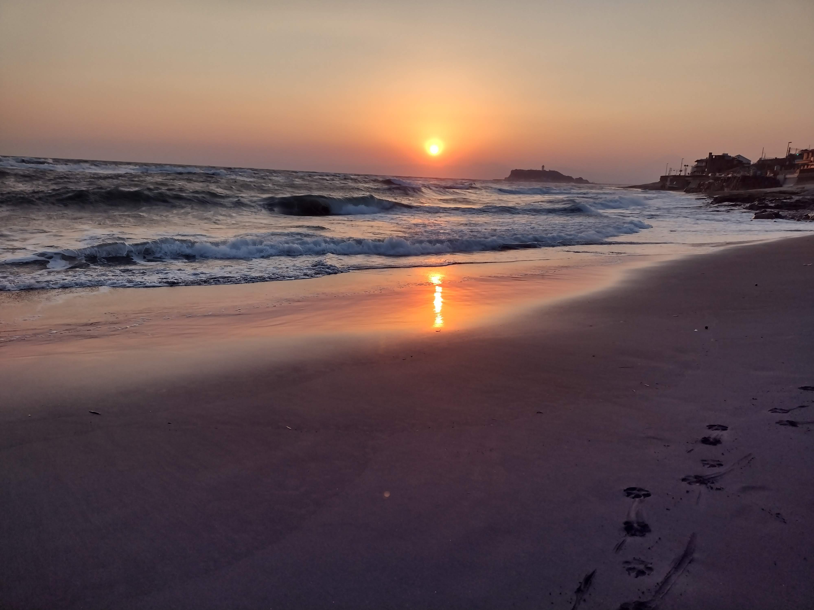

鎌倉について
鎌倉は中世の鎌倉とは断絶した地割りであるが、古都保存法によって乱開発が規制され、古社寺や史跡、神奈川県唯一の国宝建築である円覚寺舎利殿を含めた文化財が比較的多く残る。また市が観光振興に力を入れていることもあり、観光を主な産業として今なお繁栄する。 本項では「歴史都市」「文化都市」「観光都市」としての「鎌倉」について述べることとする。
由比ヶ浜海水浴場について

七里ヶ浜（しちりがはま）は、神奈川県鎌倉市南西部にある相模湾に面した2.9kmほどの浜で、
稲村ヶ崎と小動岬の間にあります。
江ノ電に乗って鎌倉と藤沢のちょうど中央の位置にある「七里ヶ浜駅」で下車し、
徒歩1分ほどで海岸に到着します。七里ヶ浜は日本の渚100選の一つでもあり、
四季を問わずヨットやウィンドサーフィンを楽しむ若者も多い海岸です。
イベント参加者の声
2020年08月22日参加
田中さんご家族
「山木康世 Live Lovely 2020」
～昼下がりの鎌倉古民家でラブリー～
鎌倉からのおしらせ
- 2020年12月15日
- レジンアクセサリー体験
- 2020年12月10日
- よくばり手縣アート
- 2020年08月20日
- 夏の思い出つくり DJイベント
- 2020年08月4日
- でるもなか個展2020夏